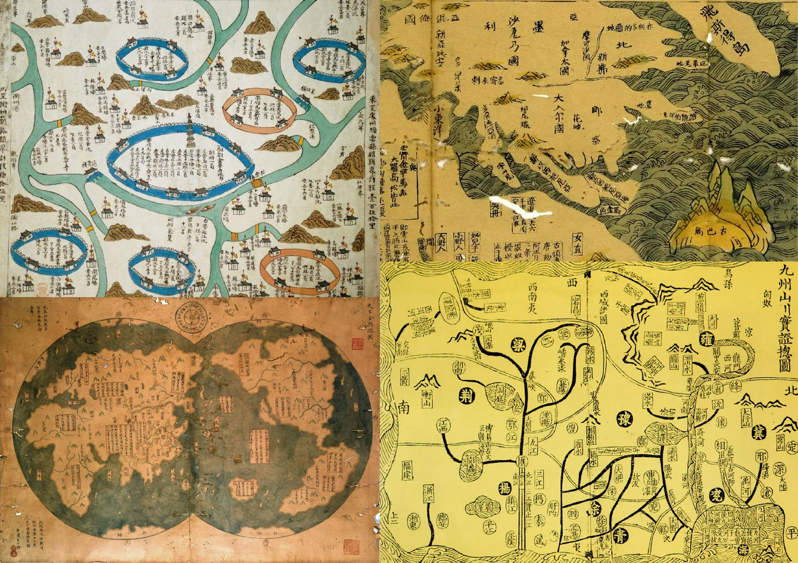
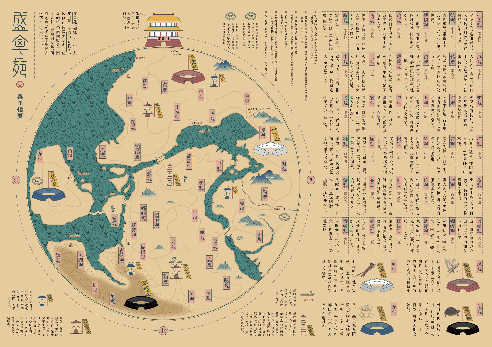
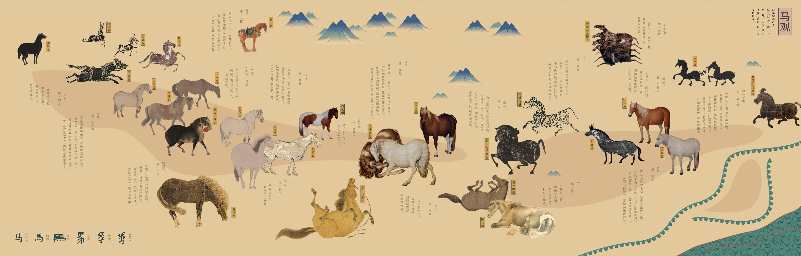
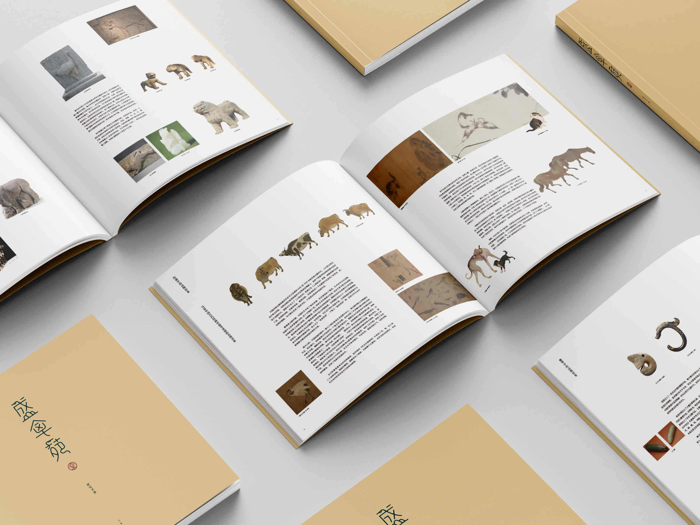
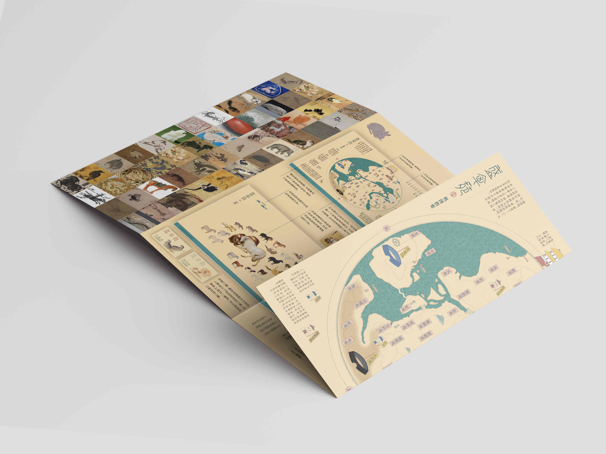
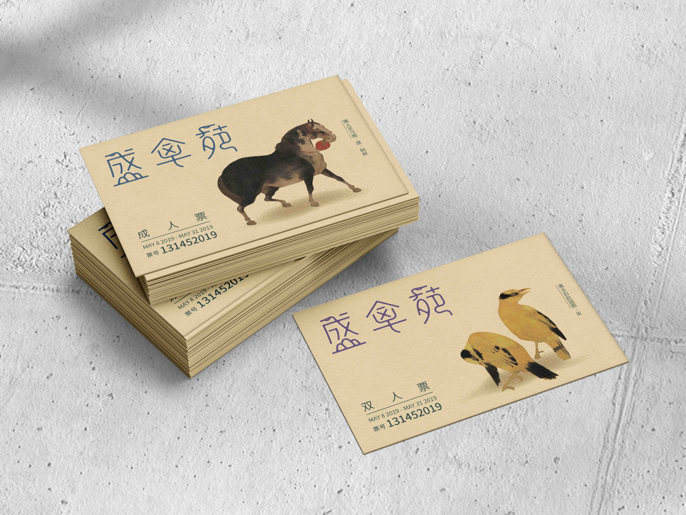
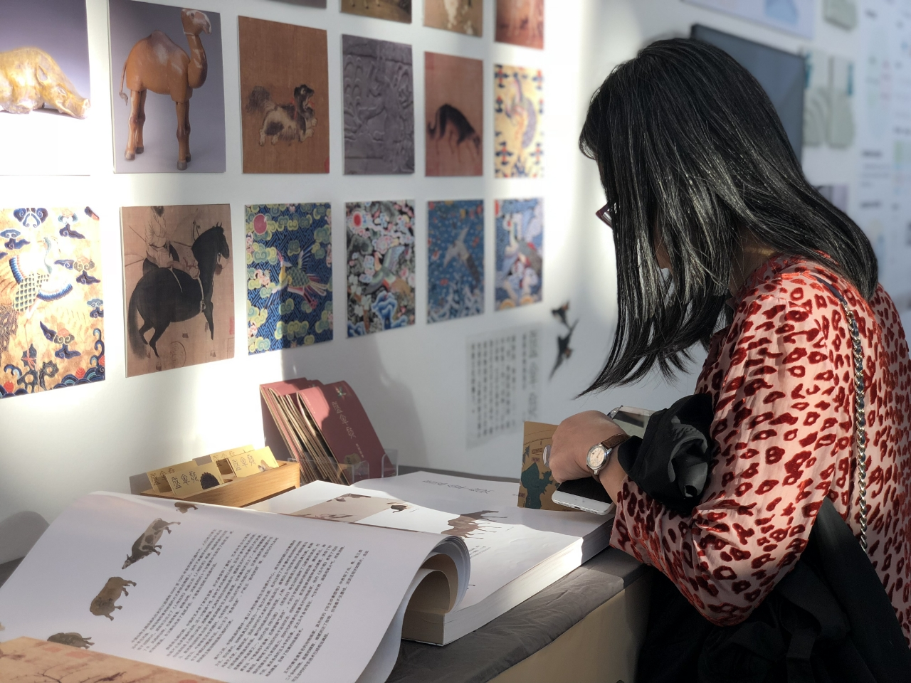
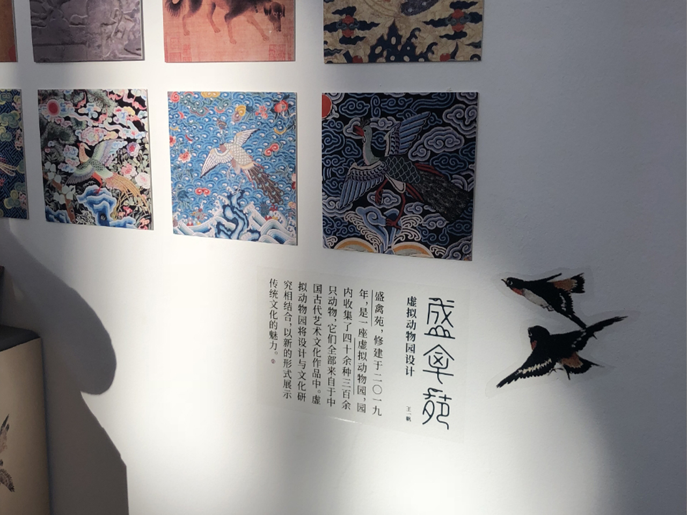
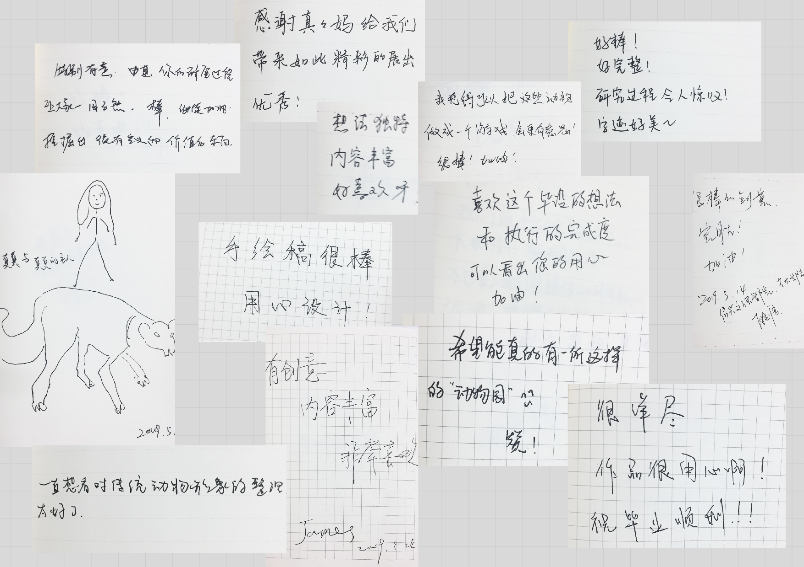

Background
My fondness for pets has always led to a particular interest in the study of animal imagery. Throughout my
three years of graduate study, I was deeply influenced by the research and design practice on Chinese
traditional design philosophy and symbol system. This inspired me to construct an animal world in the
context of Chinese traditional culture for my graduation design.
Through discussions with my supervisor, it became increasingly clear that in the context of my graduation
project, the design should combine traditional media with a more youthful, aesthetically engaging, and
interactive approach to enhance communication and appeal. I decided to create a responsive virtual zoo
website to present my research on animal imagery in Chinese traditional culture and art.

In the visual design, I drew inspiration from the artistic style of traditional Chinese maps, including the representation of architecture, roads, bodies of water, deserts, and mountains.
In the design of my virtual zoo map, I've meticulously crafted a vibrant array of details to make the exploration journey both enjoyable and realistic! At the grand entrance in the south, visitors can obtain tickets to begin this wondrous adventure. The formidable beast area in the west is surrounded by walls, ensuring safety. Additionally, the zoo features an emergency aid station, some picturesque piers, and a cozy inn, along with other functional buildings, to ensure a comprehensive and delightful experience during visit.
 I organized the research process and conclusions into a research report and designed brochures and business cards.
  The exhibition was held in the B Hall of the Academy of Arts & Design at Tsinghua University and received many comments.
  